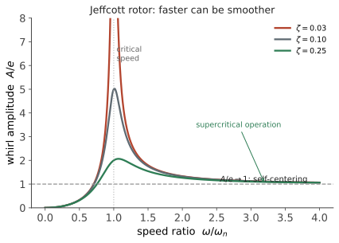

动力 IV · 转子动力学与工程振动
层次：本科接触 + 研究生/业界专门方向。 旋转机械（电机、汽轮机、压缩机、泵、主轴、涡轮增压器）是工业设备的主体。它们的振动有一些反直觉的性质——最著名的一条是：转速越过临界转速后，转子反而会自动趋于对中。本页讲清这些现象，并给出旋转机械设计的基本判据。
一、临界转速与 Jeffcott 转子
最简模型：一根无质量弹性轴中间带一个偏心圆盘（偏心距 \(e\)）。设轴的横向刚度 \(k\)、圆盘质量 \(m\)，则
当转速 \(\omega\) 接近 \(\omega_n\) 时发生共振——这个转速称为临界转速。
注意一个概念区分（常被混淆）：临界转速在数值上等于横向固有频率，但物理上是旋转不平衡这个特定激励与之共振。所以：转速 = 激励频率，这是旋转机械的特点——激励频率随工况连续变化，因而必然要扫过临界转速。
稳态振幅：

二、自动对中：为什么高速反而更平稳
\(r\gg1\) 时 \(A/e \to 1\)，且响应与激励反相 180°。
物理含义：转子不再绕轴承连线旋转，而是绕自身质心旋转——偏心被"自动"补偿掉了，轴承受到的动载荷反而下降。
工程后果极其重要： - 许多高速机械（汽轮机、离心压缩机、高速主轴）刻意设计成超临界运行； - 启停过程必须快速穿过临界转速，不能在附近停留； - 需要足够阻尼把过临界时的峰值压住（挤压油膜阻尼器就是为此设计的）。
"更快反而更稳"是转子动力学最反直觉、也最有用的结论。
三、陀螺效应
盘状转子高速旋转时，其角动量使它抵抗轴线倾斜——陀螺力矩（承第六页欧拉方程的耦合项）。
后果：转子的固有频率随转速变化。 - 正进动（涡动方向与自转同向）：陀螺效应提高固有频率； - 反进动：降低固有频率。
所以旋转机械的"固有频率"不是一个数，而是转速的函数——这正是坎贝尔图（第八页）在旋转机械中必不可少的原因：图上的固有频率线是随转速倾斜的曲线，与激励线（\(1\times\)、\(2\times\) 等斜线）的交点才是真正的临界转速。
四、失稳：比共振更危险
共振振幅由阻尼限制、且只在特定转速发生。转子失稳则是自激振动（承第七页），一旦越过阈值转速就持续存在且可能发散。
主要机制：
① 油膜涡动 / 油膜振荡：滑动轴承中的油膜可能诱发约半频（\(\approx0.42\)–\(0.48\times\) 转速）的涡动。当转速升至临界转速的两倍以上时，半频涡动频率恰好接近固有频率，锁定并剧烈发展——称为油膜振荡，可迅速破坏机器。 对策：可倾瓦轴承（几乎消除交叉刚度）、改变轴承间隙与供油。
② 内摩擦失稳：转子内部（如过盈配合面、叠片）的摩擦在超临界时引入切向失稳力。
③ 密封与气流激振（Alford 力）：叶顶间隙不均引起的切向力，在高压压缩机中是重要失稳源。
识别特征：失稳的频率接近固有频率而非转速的整数倍——这是频谱诊断中区分"共振/不平衡"与"失稳"的关键。看到明显的非同步（尤其接近半频）分量，就要警惕失稳。
五、旋转机械的实用判据
振动烈度标准：工业上按机器类型与安装方式规定振动速度有效值（mm/s RMS）的评价区间（相关国际标准给出 A/B/C/D 区）。用速度而非位移，是因为速度的有效值在较宽频段上与疲劳损伤相关性更好。
平衡精度（承第六页）：按"许用偏心 × 转速"分级，高速转子要求极严。
诊断的频谱特征表（现场最实用的一张表）：
| 频率成分 | 典型故障 |
|---|---|
| \(1\times\) 突出 | 不平衡 |
| \(2\times\) 突出、轴向大 | 不对中 |
| \(0.42\)–\(0.48\times\) | 油膜涡动/振荡（失稳） |
| 多倍频 + 底噪抬升 | 松动、摩擦 |
| 齿数 × 转速及边带 | 齿轮故障（第十一页） |
| 轴承特征频率 | 滚动轴承损伤（第十二页） |
| 接近固有频率的非同步 | 失稳或共振 |
六、几类工程振动问题
- 扭转振动：轴系的扭转模态。它在横向振动传感器上往往测不到（需专门测量），却能造成断轴与齿轮打齿。柴油机轴系、长传动链必须做扭振计算，常配扭振减振器；
- 叶片振动：叶片自身的模态与叶片通过频率、尾流激励耦合。高周疲劳是叶片失效的主因（第十四页）；
- 管道振动：泵/压缩机的脉动激励与管系声学模态耦合，是石化装置的常见问题；
- 机床颤振：切削过程的自激振动（第十八页）。
七、要点
- 临界转速处共振，超临界则自动对中——高速反而更平稳，这是转子动力学最反直觉的结论；
- 启停必须快速穿越临界转速，并需足够阻尼；
- 陀螺效应使固有频率随转速变化，故必须用坎贝尔图判定临界转速；
- 失稳（油膜涡动等）比共振危险：持续、可能发散，特征是非同步、约半频；
- 频谱特征表是现场诊断的核心工具；
- 扭转振动往往测不到却能断轴——需专门关注。
线二结束。下一线转向机器的"骨骼与关节"：机构如何把运动变成想要的形式，齿轮如何传递动力，轴承如何承载并减少摩擦。